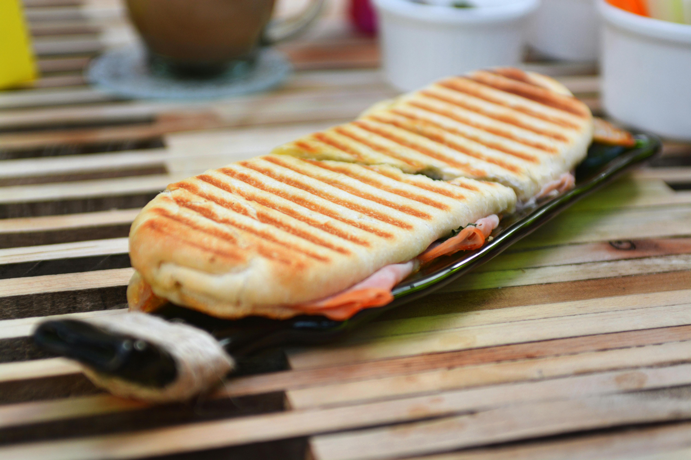

Fresh Pressed Panini

Photo by DΛVΞ GΛRCIΛ
Back to Home
Ingredients
- 1 tablespoon extra-light olive oil
- 2 slices Italian bread
- 2 tablespoons mayonnaise
- 3 slices deli ham, or more to taste
- 2 slices Cheddar cheese
- 1 slice firm-ripe tomato
- 1 thin slice onion
Steps
- Drizzle olive oil on 1 side of each bread slice. Spread 1 tablespoon mayonnaise on other side of each slice.
- Arrange layers of ham, Cheddar cheese, tomato, and onion on top. Top with other bread slice, mayonnaise-side down.
- Place sandwich on grill pan; weigh it down with a heavy pan. Cook until cheese is melted and grill marks appear, 3 to 5 minutes per side.